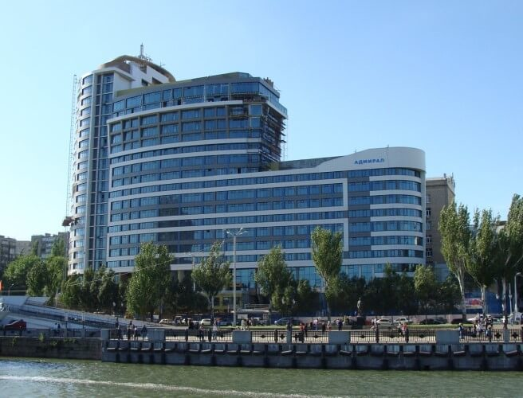

У нас вы можете заказать лифтовое оборудование в торговый центр, высокоскоростные
лифты для высотных зданий, лифты для объектов частной недвижимости, панорамные
лифты для бизнес-центров, специальное подъемное оборудование для установки в
лечебных учреждениях, эскалаторы и траволаторы, автомобильные лифты для подземных
паркингов, автоматизированные парковочные системы, а так же грузовые подъемники и
подъёмники для инвалидов. Мы предлагаем разные типы и виды лифтов, отделки
лифтовых кабин, лифты без машинного помещения, эконом варианты и лифты
премиум-класса.